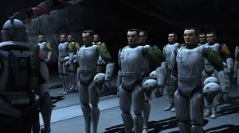

Clone Biography
Clones are genetically engineered soldiers, grown from the DNA of bounty hunter Jango Fett, who served as the backbone of the Grand Army of the Republic during the Clone Wars. They were designed to be superior to battle droids, with traits like increased stamina and decreased reaction times, but they were also engineered for loyalty through an inhibitor chip. They wore white armor, like the Phase I and later Phase II models, and came in many specialized variants for different combat roles.